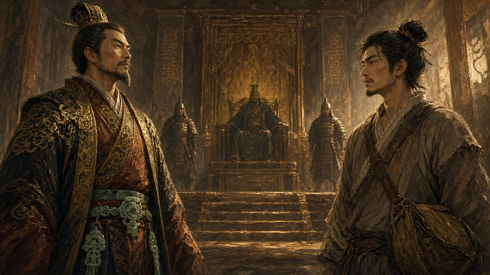
HIST 270 · History of China · Chapter 2 · Lecture 1
When Birth Stopped Mattering
Hegemons, Total War, and the Rise of the Shi
770–256 BCE · A King in Name Only · War Without Rules · Iron, Coins and Counted People · Two Applicants Background essay ↗
A noble and a talented shi face the same empty seat of office. AI-generated interpretation, not a historical record.
Welcome to Chapter 2. This deck covers the Eastern Zhou , 770 to 256 BCE, when the Zhou king lost power, states fought to survive, and talent began to outweigh birth (pp. 20–26).
Use the arrow keys to move, N for these notes, and Esc for a slide map. Four segments each end with a self-check and a Reading Guide question (Questions 1 to 4). The Pierian Spring at the end is required independent study.
A noble and a talented shi face the same empty seat of office. AI-generated interpretation, not a historical record.
Check yourself: Which four Reading Guide questions does this deck prepare you for?
Cold open · A river crossing · 638 BCE
In 638 BCE a Duke Refused to Attack an Army Crossing a River, and Lost
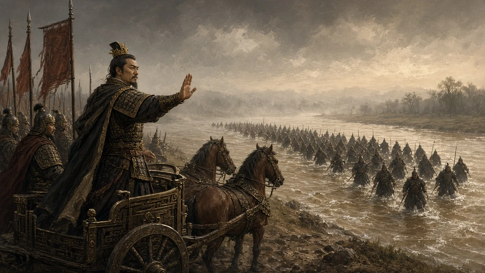
A chariot commander hesitates while enemy troops cross a river. AI-generated interpretation, not a historical record.
Outnumbered. The duke of small Song had to fight a much stronger state.
The advice. His minister of war urged: strike while they cross the river.
The refusal. “The gentleman does not inflict a second wound.”
The rule. He would not attack an army that had not formed its ranks.
Independent study: Pierian Spring on how we know →
Sources: Ebrey, Ch. 2, p. 23; Zuo zhuan , Duke Xi, year 22.
Start with a scene that sounds almost unbelievable today. In 638 BCE the duke of the small state of Song felt he had to fight a much stronger state. His army was badly outnumbered. His minister of war saw a chance: the enemy was fording a river , wading across, so attack now, while they are strung out in the water (p. 23).
The duke refused. The chronicle called the Zuo zhuan ("dzaw jwan") reports his reason: "The gentleman does not inflict a second wound, nor does he capture those with gray hair." He would not drum an attack before the other side had drawn up its ranks (p. 23). He waited, the enemy formed up, and Song was beaten. The textbook does not name the duke or the enemy; tradition identifies him as Duke Xiang of Song and his enemy as the great southern state of Chu.
A chariot commander hesitates while enemy troops cross a river. AI-generated interpretation, not a historical record.
Why this matters: this lecture asks how China went from this duke's code of honor to armies that drafted every man over fifteen. Keep this scene in mind; you return to it at the end (Reading Guide Q2).
Check yourself: What did the duke's minister advise, and why did the duke refuse?
Start here · How to study this deck on your own
Four Segments, Self-Checks, and a Narration Button Guide You Through This Deck
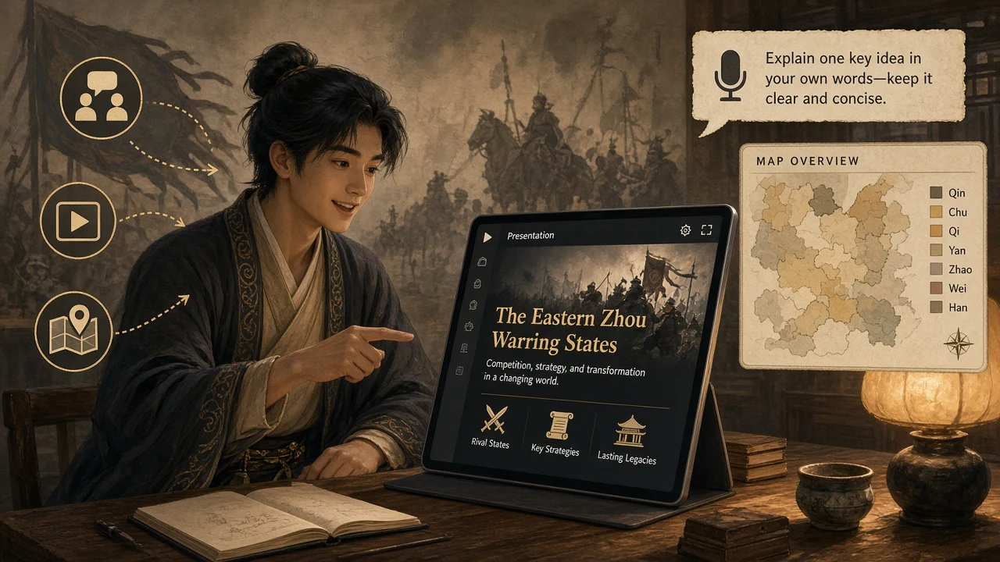
A friendly modern student explores Study Buddy and lecture controls. AI-generated interpretation, not a historical record.
Click Narration (lower right) or press N for each slide's Study Buddy notes.
Work through four segments; each ends with a self-check, then a Review Question.
Click a for a definition; click any image to enlarge it.
The Pierian Spring at the end is required independent study.
Arrow keys move; Esc shows a slide map. All due dates are on Canvas.
Sources: Ebrey, Ch. 2, p. 26.
This slide gives you the controls. This deck is built for you to study on your own, at your own pace. Try each tool now so it feels natural later.
Every slide has Study Buddy notes, like these. Open them with the Narration button or the N key; press N or Esc to close them. They explain the slide, define new words, cite the textbook page, and end with a question. A good habit: read the slide first, guess what it is about, then open the notes and check your guess. The small letter in the lower-left corner is the slide's permanent name; quote it if you email a question.
The deck runs in four segments, one for each Reading Guide question from Question 1 to Question 4. Each segment ends with a self-check, quick questions that are never graded, and then the Review Question itself. Write your answer in your Reading Guide before you move on.
A friendly modern student explores Study Buddy and lecture controls. AI-generated interpretation, not a historical record.
Why this matters: testing yourself as you go is the surest way to remember what you study alone.
Check yourself: Open the narration for this slide, close it with Esc, then open the teal dotted word. Did both work?
Roadmap · Four segments, one question
Four Segments Explain How a World of Nobles Became a World of Talent
I
A King in Name Only Hegemons and rival states. Question 1.
II
War Without Rules From honor to mass armies. Question 2.
III
Iron, Coins, Counted People Farms, iron, cities, officials. Question 3.
IV
Two Applicants The rise of the shi. Question 4.
The thread: To survive, states needed soldiers, taxes and skill, so talent began to outweigh birth.
This slide gives you the map of the lecture. One question runs through it: why did birth matter less and talent matter more during the Eastern Zhou (pp. 20–26)?
Segment I: the Zhou king's collapse and the hegemons. Segment II: war, from the duke at the river to Qin's mobilization of 260 BCE. Segment III: the farms, iron, coins and officials that paid for those wars. Segment IV: the shi , lower aristocrats who found careers serving rulers.
Check yourself: Name the four segments and the question that goes with each.
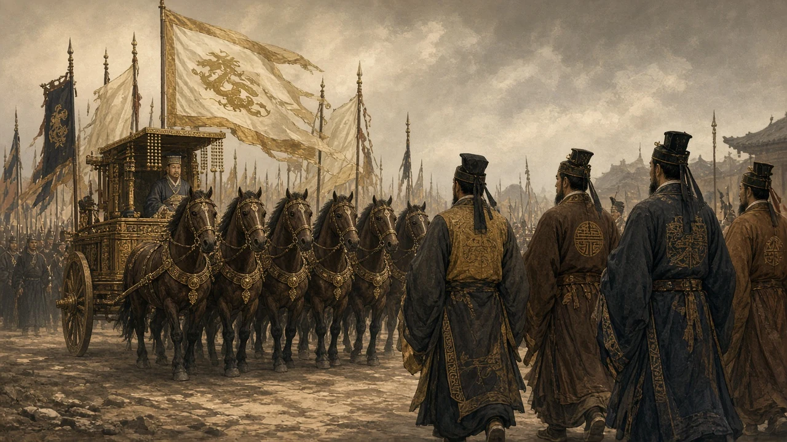
Segment 1 of 4 · Act I · 770 BCE
A King in Name Only
The Zhou king kept his title and his rituals. His lords kept the armies.
A six-horse royal ceremony continues while powerful lords turn away. AI-generated interpretation, not a historical record.
Segment 1 begins. After 770 BCE the Zhou kings still ruled in name, from Luoyang, but had no armies to make anyone obey (p. 21). This segment follows what filled the gap: alliances led by a hegemon .
A six-horse royal ceremony continues while powerful lords turn away. AI-generated interpretation, not a historical record.
This segment builds toward Reading Guide Q1, on how Eastern Zhou politics differed from Western Zhou politics.
Check yourself: Guess before you start: if a king loses his army but keeps his title, who really holds power?
Q1 story · Luoyang · 770 BCE onward
The Zhou Court Moved East, and Its Lords Stopped Obeying
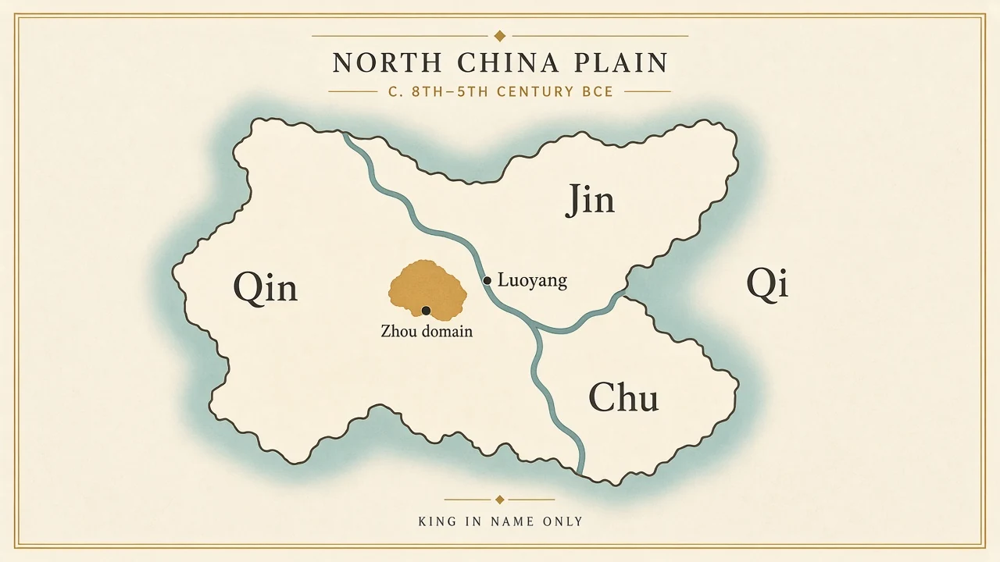
Tiny Zhou royal domain near Luoyang amid powerful Qin, Jin, Qi and Chu: king in name only. AI-generated explanatory schematic; geography and routes simplified, not to scale.
770 BCE. The Zhou court moved east to Luoyang.
Name only. The king was still supreme, but had no army to enforce it.
Defiance. Supposed vassals sometimes even attacked the Zhou king.
Two periods. Spring and Autumn to 479 BCE; then the Warring States.
Ch. 1 L3 · the fall of 771 ↗
Sources: Ebrey, Ch. 2, pp. 20–21.
This slide picks up where Chapter 1 ended. In 771 BCE the Western Zhou king was killed, and in 770 the court moved east to Luoyang (p. 20). The recap link below reopens the Chapter 1 slide on that fall.
In the five centuries that followed, the old Zhou fiefs came to act more and more like independent states, linked to one another in a system of many states (p. 20). The Zhou kings were still considered the supreme monarchs, but they no longer had the military might to force obedience, and sometimes their supposed vassals even attacked them (p. 21).
Historians split the Eastern Zhou into two periods named after books: the Spring and Autumn period , to 479 BCE, after a chronicle called the Spring and Autumn Annals , and the Warring States period after it, named for a book of Warring States stories (p. 21).
Read the map: the Zhou royal domain is a small patch near Luoyang, surrounded by far larger states. It is a modern map, so the borders are approximate.
Why this matters: Reading Guide Q1 asks how this structure differed from the Western Zhou, when the king's relatives ruled under him (p. 21).
Check yourself: What did the Zhou king keep after 770 BCE, and what did he lose?
Tiny Zhou royal domain near Luoyang amid powerful Qin, Jin, Qi and Chu: king in name only. AI-generated explanatory schematic; geography and routes simplified, not to scale.
Q1 concept · Multistate system · Hegemon
Concept: In a Multistate System, a Hegemon Led the Others Without Ruling Them
Concept
Multistate system · Hegemon
A multistate system is a group of independent states that deal with each other as rivals and allies. A hegemon is the leading state, or its ruler, in such a system.
Many states. Former Zhou fiefs now acted like independent countries.
The hegemon. One ruler was recognized as leader of the alliance of Zhou states.
Meetings. The hegemon called meetings where rulers swore oaths.
Not a king. He led by agreement and force, not by the right to rule.
Sources: Ebrey, Ch. 2, pp. 20–22.
You need two terms before the next story. A multistate system is a set of independent states that deal with one another as rivals and allies, with no single ruler over them all. Your textbook says the old Zhou fiefs came to function more and more like independent states "linked to one another in a multistate system" (p. 20).
A hegemon is the leading power in such a system. In the Eastern Zhou, the ruler of one state was sometimes recognized as the hegemon, "the leader of the alliance of Zhou states" (p. 21). The Chinese word is ba . The hegemon periodically called meetings of the allied states, where rulers or their chief ministers swore to uphold the Zhou order (p. 21).
Notice the difference from a king. The Zhou king still held the highest title. The hegemon held the real leadership, but only while other states accepted it.
Why this matters: Reading Guide Q1 asks directly about the role of the hegemon. Be able to say in one sentence what a hegemon was and what he did.
Check yourself: How was a hegemon different from the Zhou king?
Q1 story · Qi · ca. 680–645 BCE
An Adviser Who Should Have Died with His Lord Made Duke Huan the First Hegemon
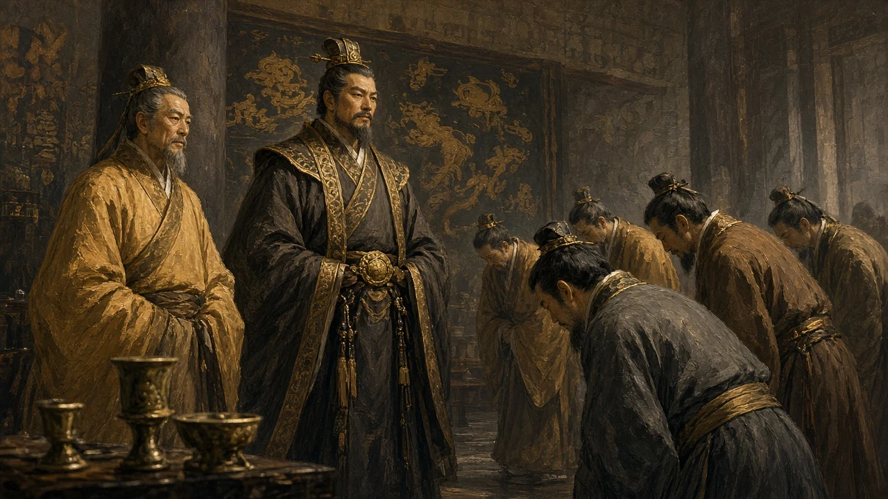
Guan Zhong and Duke Huan work together as allied lords gather. AI-generated interpretation, not a historical record.
The wrong side. Guan Zhong served the brother who lost a succession fight.
A friend. Bao Shuya recommended him to the winner, Duke Huan of Qi.
The adviser. He hired by character and ability, drafted commoners, promoted trade.
The result. Qi led the states, and Duke Huan became the first hegemon.
Sources: Ebrey, Ch. 2, p. 22 (Biography: Guan Zhong).
This slide tells the story of the first hegemon, and of the man who made him. Guan Zhong (gwan jung, ca. 720–645 BCE) was the genius behind the rise of Qi in the east (p. 22). As young men, he and his friend Bao Shuya served rival brothers of the duke of Qi. When the duke was killed, Bao's patron won the succession fight and became Duke Huan ; Guan Zhong's patron fled and was killed. Bao recommended his friend anyway, and the new duke hired him (p. 22).
The advice paid off. Guan Zhong urged the duke to defend small states against the Rong and to refuse alliances with sons plotting against their fathers. Qi brought the other states under its sway, and Duke Huan was recognized as the first hegemon. Guan Zhong was also credited with hiring officials for their character and ability rather than their birth, drafting commoners, issuing coins and promoting trade (p. 22).
Guan Zhong and Duke Huan work together as allied lords gather. AI-generated interpretation, not a historical record.
Why this matters: the first hegemon owed his success to an adviser chosen for ability, a theme for both Reading Guide Q1 and Q4.
Check yourself: Why might a lord hesitate to hire a man who had served his rival?
Q1 story · A covenant meeting · 657 BCE
In 657 BCE the Allied States Swore an Oath About Water, Grain, Heirs and Women
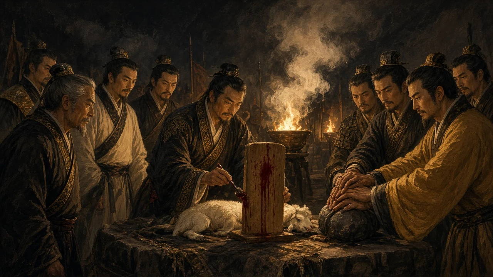
Allied leaders gather at night for a covenant blood oath. AI-generated interpretation, not a historical record.
Water. No state would dam the irrigation water its neighbors needed.
Grain. No state would refuse to sell grain to others.
Heirs. No ruler would replace his heir, or make a concubine his wife.
Women. No ruler would let women interfere in state affairs.
Sources: Ebrey, Ch. 2, p. 21; Houma covenant texts (see the background essay).
This slide shows what a hegemon's meeting actually produced: an oath. At a meeting in 657 BCE, the allied states swore not to dam irrigation waters, not to withhold sales of grain, not to replace heirs apparent, not to promote concubines to wives, and not to let women interfere in state affairs (p. 21).
Read the list as evidence of what the states feared. Water and grain were weapons in a world of rival farming states. The rules about heirs and concubines point to the dangerous problem on the next slide, disputed successions. The last rule tells you something about gender: rulers assumed women at court would push their own sons' interests, and your textbook notes the common perception that women could not take a disinterested view of the larger good (p. 21).
Allied leaders gather at night for a covenant blood oath. AI-generated interpretation, not a historical record.
Why this matters: for Reading Guide Q1, the oath shows what the hegemon's alliance did: it set rules among states that no king could enforce.
Check yourself: Name three things the states swore not to do in 657 BCE. What does the list suggest they feared?
Q1 story · Exiled princes · 7th–6th centuries BCE
Rival Sons Fled to Their Mothers’ Home States and Came Back with Armies
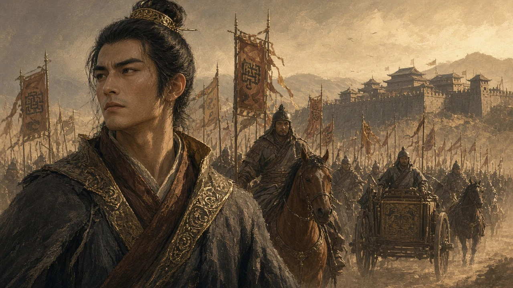
An exile returns to his state with an armed foreign escort. AI-generated interpretation, not a historical record.
Many sons. A ruler had a wife and concubines, and sons by several women.
The rule. The wife’s eldest son should inherit, but rulers could choose others.
Exile. Passed-over sons sought allies in their mothers’ home states.
Invasion. Neighbors lent armies to put a friendly prince on the throne.
Sources: Ebrey, Ch. 2, p. 21.
This slide explains one of the commonest reasons for war between the states: fights over who would inherit. A ruler typically had concubines , recognized secondary partners, as well as a wife, so he had sons by several women. In theory the throne went to the wife's eldest son. In practice, a ruler could choose a concubine's son if he wished, so sons and their mothers schemed for favor (p. 21).
A son who felt cheated did not simply give up. Because rulers took their wives from the ruling families of other states, he could travel to the state his mother or grandmother came from, or where his sisters and aunts had married. Those rulers were often happy to lend him an army: a prince who owed them his throne would be a useful neighbor (p. 21). Marriage ties turned family quarrels into wars between states.
An exile returns to his state with an armed foreign escort. AI-generated interpretation, not a historical record.
Why this matters: for Reading Guide Q1, this is how the multistate system worked in practice: states meddled in each other's successions.
Check yourself: Why would a ruler lend an army to a prince from another state?
Q1 story · Balance of power · 770–260 BCE
The States on the Edges, Qin, Jin, Qi and Chu, Grew Strongest
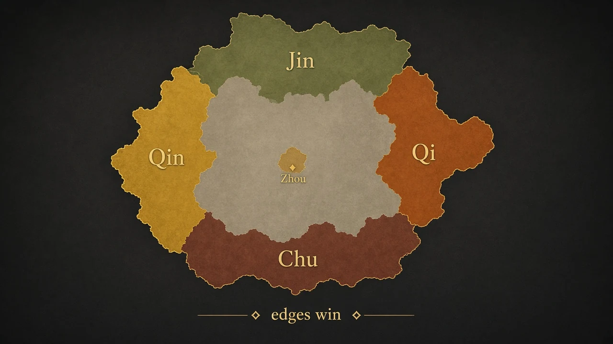
Powerful edge states surround the smaller central states: the edges win. AI-generated explanatory schematic; geography and routes simplified, not to scale.
Balance. States tried to keep any one rival from growing too strong.
The edges won. Qin, Jin, Qi and Chu could expand outward into new land.
Qi against Chu. As Chu pushed north, Qi organized other states to resist.
The middle. Weary central states sometimes called peace conferences.
Independent study: Pierian Spring on Qin’s buried followers →
Sources: Ebrey, Ch. 2, pp. 20–21; Map 2.1.
This slide shows who won the long competition. Besides succession disputes, the states fought to keep a balance of power , preventing any one state from becoming too strong (p. 21). The states on the edge of the Zhou world had an advantage: they could grow outward, into land beyond the old center. So the four states that gained the most during the Spring and Autumn period were Qin in the west, Jin in the north, Qi in the east and Chu in the south (p. 21).
As Chu expanded from the south, Qi organized other states to resist it. The states in the middle, caught between the giants, sometimes organized peace conferences (p. 21). By the third century BCE only seven important states remained (p. 20).
Powerful edge states surround the smaller central states: the edges win. AI-generated explanatory schematic; geography and routes simplified, not to scale.
Why this matters: for Reading Guide Q1, a multistate system is not frozen; it rewarded the states that could grow.
Check yourself: Why did states on the periphery gain the most?
Q1 story · Neighbors · 7th–4th centuries BCE
and Were Enemies, Allies, Mothers and Wives
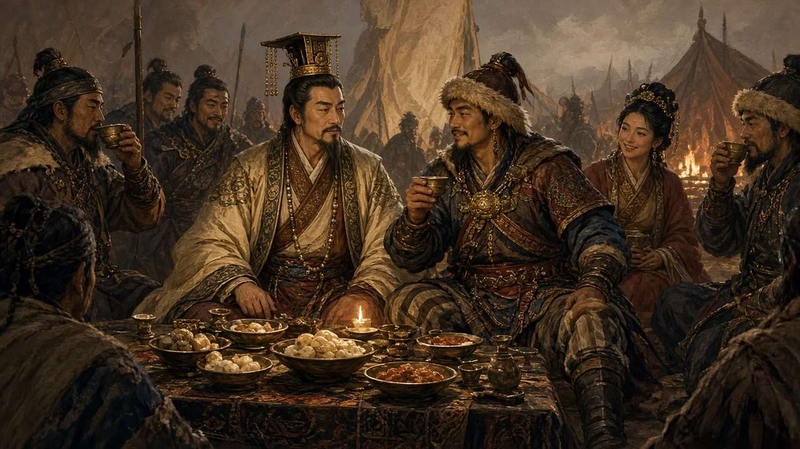
Families in different regional dress share a marriage-alliance feast. AI-generated interpretation, not a historical record.
Allies. Jin often enlisted Rong or Di groups to fight Qin.
Family. Duke Wen of Jin’s mother was a Rong; his wife was a Di.
One script. Chinese was the only written language in this world.
Zhongshan. Kings descended from the White Di cast bronzes full of classical phrases.
Ch. 1 L3 · Rong and Yi ↗ Ch. 1 L2 · one script ↗
Sources: Ebrey, Ch. 2, pp. 22–23.
This slide complicates the picture of "Chinese" against "barbarians." Hegemons often brought troops to help a state fight off peoples from beyond the Zhou world. But groups labeled Di , Rong or Yi were not always enemies (p. 22). Jin often enlisted Rong or Di groups to fight Qin, some Rong and Di leaders knew Chinese literature, and the elites intermarried: Duke Wen of Jin , the returning exile on the previous slide, had a Rong mother and a Di wife (p. 22).
Writing pulled the neighbors in. Chinese was the only written language in this world, which worked toward making it the common language (p. 22). The rulers of Zhongshan descended from the White Di, yet called themselves kings like everyone else, and the tomb of King Cuo (tsaw), who died around 308 BCE, held bronzes inscribed in typically Confucian language (p. 23).
Families in different regional dress share a marriage-alliance feast. AI-generated interpretation, not a historical record.
Why this matters: for Reading Guide Q1, the multistate system included non-Zhou peoples as allies and kin, not only as enemies. You meet a southern version of this story with Chu in Lecture 4.
Check yourself: Give two kinds of evidence that Rong and Di were not simply enemies of the Zhou states.
Self-check · Segment 1 · not graded
Check Yourself: A King in Name Only
Answer each question from memory, out loud or on paper, then click Show answer . Nothing here is graded or recorded.
1. After 770 BCE, what did the Zhou king still have, and what had he lost?
Show answer
The title of supreme monarch and its rituals; he had lost the military might to force obedience (p. 21).
2. What was a hegemon?
Show answer
The ruler recognized as leader of the alliance of Zhou states, who called meetings where rulers swore oaths (p. 21).
3. Name three promises sworn at the meeting of 657 BCE.
Show answer
Any three: not to dam irrigation water, withhold grain sales, replace heirs apparent, promote concubines to wives, or let women interfere in state affairs (p. 21).
4. Why did the states on the edges gain the most?
Show answer
They could expand outward into new land; Qin, Jin, Qi and Chu grew strongest (p. 21).
Missed one? Go back: move-east concept-multistate covenant-657 edge-states
Segment 1 is done. Before you open Review Question 1, test yourself. These four questions come from the Check yourself prompts on the segment's slides (pp. 21–22).
Answer each one from memory, out loud or on paper, before you click Show answer . Struggling a little before you look is what makes facts stick. If you miss one, use the links at the bottom of the slide to go back to the slide that teaches it, reread its notes, and try again.
Notice that the questions follow the segment's path: what the king lost, who filled the gap, what the alliance agreed, and which states came out on top. Those are the raw materials for Review Question 1.
Why this matters: recalling facts without looking is the best preparation for writing an answer in your own words.
Check yourself: Which question did you miss or guess, and which slide will you reread before Review Question 1?
Your turn · Reading Guide · Review Question 1
Reading Guide · Review Question 1
Review Question 1
How did the political structure of the Eastern Zhou period differ from the Western Zhou, and what was the role of the “hegemon” within this evolving multistate system?
Open the Reading Guide ↗
Two parts: first compare the two periods (before and after 770 BCE), then explain what a hegemon did. Use specific events as evidence.
Go back to the teaching slides: F · move-east G · concept-multistate H · guan-zhong I · covenant-657 J · succession-wars K · edge-states L · rong-and-di
Reading Guide Q1 (p. 21). This is your first checkpoint. Try to answer on your own before you open the Reading Guide; the button opens it in a new tab, so this deck stays where you left it.
How to build a strong answer: the question has two parts. For the difference , start with the Chapter 1 recap on the move-east slide: in the Western Zhou, the king's relatives ruled their lands under him; after 770 BCE, what happened to his power, and how did the fiefs behave? The multistate concept slide gives you the vocabulary.
For the role of the hegemon , use the Guan Zhong slide (how Qi became the first hegemon) and the covenant of 657 slide (what a hegemon's meeting produced). The succession wars , edge states and Rong and Di slides show the system the hegemon tried to manage.
End with a judgment of your own: was the hegemon a substitute for the king, or something new? The guide asks you to copy the sentence beginning "During this period..." on page 21; compare it with what you wrote.
Why this matters: every later question in this chapter assumes you understand this world of rival states.
Check yourself: Can you explain the hegemon's role in two sentences, with one example?
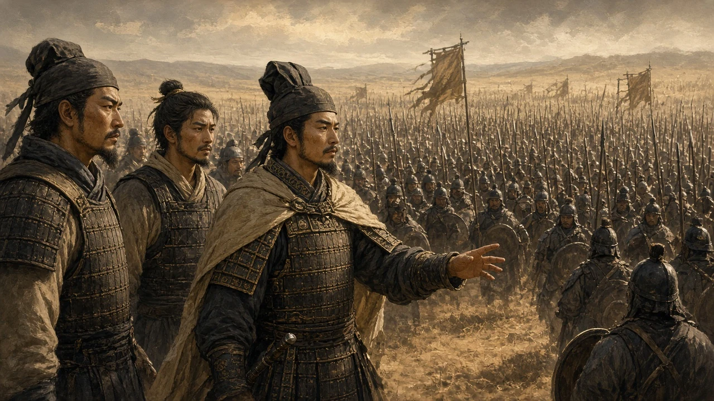
Segment 2 of 4 · Act II · 638–260 BCE
War Without Rules
Honor gave way to drill, crossbows, cavalry and armies of hundreds of thousands.
Ranks of mass infantry fill the field. AI-generated interpretation, not a historical record.
Segment 2 begins. You started with a duke who would not attack men crossing a river. This segment follows war from that code of honor to Qin's campaign of 260 BCE, which called up every man over fifteen (pp. 22–24).
Ranks of mass infantry fill the field. AI-generated interpretation, not a historical record.
It builds toward Reading Guide Q2, on how warfare was transformed.
Check yourself: Guess: what would a ruler need in order to put two hundred thousand men in the field?
Q2 story · Spring and Autumn battles · 8th–6th centuries BCE
Spring and Autumn Battles Followed a Code of Honor
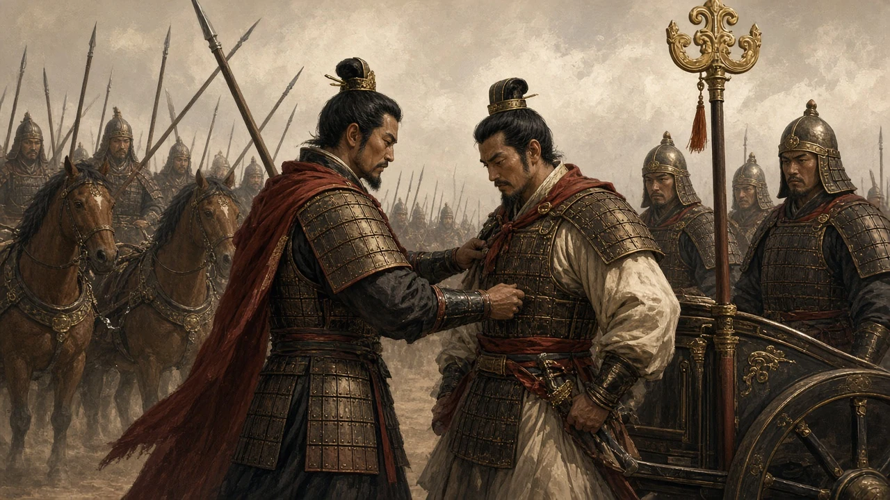
Warriors pause to help with armor, evoking the old code of honor. AI-generated interpretation, not a historical record.
Small armies. A large army had up to ten thousand soldiers.
Chariots. States were ranked by how many hundred chariots they had.
Rules. Sides agreed on time and place, and divined before fighting.
Mercy. No attacks during mourning; ruling houses were not wiped out.
← The duke at the river
Sources: Ebrey, Ch. 2, pp. 22–23.
This slide shows the kind of war the duke of Song believed in. In the Spring and Autumn period, a large army had up to ten thousand soldiers, the chariot was at the center of warfare, and states were ranked by how many hundreds of chariots they could put in the field (pp. 22–23). Chariot warriors were aristocrats who trained for years.
A code of chivalrous conduct regulated war between the states. The two sides agreed on a time and place for battle, and each performed divination and sacrifices first. No state attacked another while it was mourning its ruler, and ruling houses were not wiped out, so someone could keep sacrificing to their ancestors (p. 23). Battle stories in the Zuo zhuan suggest commanders cared as much about proving their honor as about winning, and a wound ended a man's part in the fight but not necessarily his life (p. 23).
Warriors pause to help with armor, evoking the old code of honor. AI-generated interpretation, not a historical record.
Why this matters: Reading Guide Q2 asks you to compare this kind of war with the Warring States kind. This slide is your "before."
Check yourself: Name two rules of the Spring and Autumn code of war. Why did they make war less deadly?
Q2 concept · Conscription · Total war
Concept: Conscription Turned Whole Populations into Armies
Concept
Conscription · Total war
Conscription means the state requires ordinary men to serve as soldiers. Total war means a state throws its whole population and economy into fighting.
Who fought. Aristocrats in chariots gave way to drafted farmers on foot.
How many. By 300 BCE, armies of a couple hundred thousand drafted soldiers.
Who served. By the late Warring States, military service was nearly universal for men.
What it took. Rulers needed people, food, weapons and records to draft them.
Sources: Ebrey, Ch. 2, pp. 23–24.
You need two terms before the next stories. Conscription (also called the draft) means the state requires ordinary men to serve as soldiers, whether they want to or not. A conscript is a drafted soldier. Total war is a phrase historians use for war in which a state throws its whole population and economy into the fight, not just a warrior class.
Your textbook shows both in the Warring States period. By the late Warring States, military obligations were "nearly universal for men," and by 300 BCE states were sending out armies of a couple hundred thousand drafted foot soldiers (p. 23). Guan Zhong had already introduced drafting commoners in Qi (p. 22).
Think about what that took. To draft every man, a ruler had to know who and where the men were, feed them, arm them and train them. That is why war connects to the farms, registers and iron of Segment 3.
Why this matters: Reading Guide Q2 asks about the scale and the social impact of war. These two terms let you describe both.
Check yourself: In your own words, what is the difference between an aristocratic army and a conscript army?
Q2 story · Infantry and crossbows · 5th–3rd centuries BCE
Drilled Infantry with Crossbows Beat Chariot Nobles
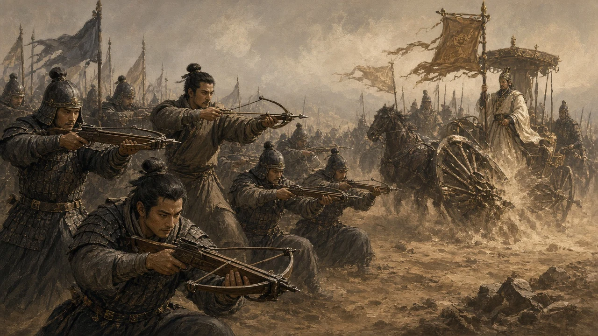
Drilled infantry aim complete crossbows at a chariot; dust and broken wheel. AI-generated interpretation, not a historical record.
Infantry. Large, well-drilled foot armies could beat chariot-led forces.
Why they won. Standardization, organization, discipline and sheer size.
The crossbow. A bronze trigger let a foot soldier outshoot a horseman.
Armor. Soldiers began wearing leather armor and sometimes iron helmets.
Sources: Ebrey, Ch. 2, p. 23.
This slide shows why the chariot nobles lost. By the Warring States period, large, well-drilled infantry armies (soldiers on foot) could withstand and defeat chariot-led forces (p. 23). A conscript with a year or two of training could not match an aristocrat who had trained for years. But infantry armies won anyway, through standardization, organization, discipline and sheer size (p. 23).
A new weapon helped. Your textbook says the crossbow was invented in the southern state of Chu. Its trigger was an intricate bronze mechanism that let a foot soldier shoot farther than a horseman with a light bow. One text of the period claimed a skilled soldier with a powerful crossbow and a sharp sword was a match for a hundred ordinary men (p. 23). To defend against crossbows, soldiers began wearing armor, mostly leather strips tied with cords, and helmets, sometimes of iron (p. 23).
Drilled infantry aim complete crossbows at a chariot; dust and broken wheel. AI-generated interpretation, not a historical record.
Why this matters: for Reading Guide Q2, this is the core of the technological and organizational change.
Check yourself: How could poorly trained conscripts beat aristocratic warriors?
Q2 story · Wei · 4th century BCE
Wei’s Elite Troops Marched 50 Kilometers a Day to Earn a Tax Exemption
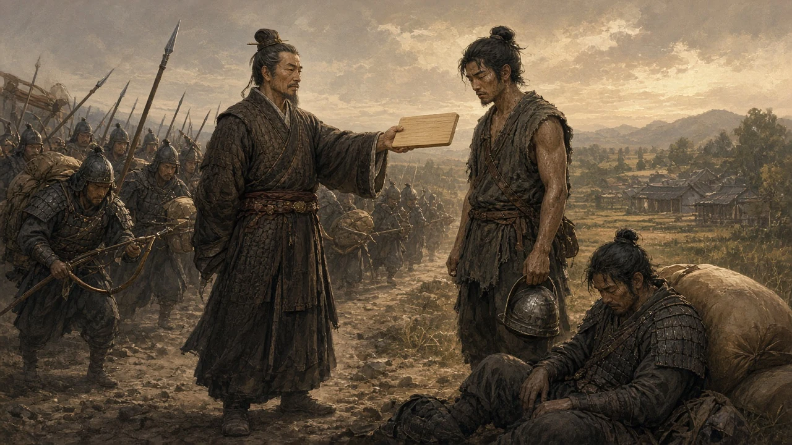
Exhausted elite infantry finish a forced march and receive a blank exemption token. AI-generated interpretation, not a historical record.
The load. Heavy armor, a crossbow, fifty arrows, a spear, a sword.
The test. Three days’ food, and about 50 kilometers in a single day.
The reward. The whole household was freed from taxes and labor service.
New generals. Masters of maneuver and deception, chosen for skill, not birth.
Independent study: Pierian Spring on Sunzi’s Art of War →
Sources: Ebrey, Ch. 2, pp. 23–24.
This slide shows how states built their best units. Most soldiers were drafted peasants, but it became common to select and train elite corps of crack troops (p. 23). In the state of Wei , a candidate had to wear heavy armor and a helmet, shoulder a crossbow and fifty arrows, strap a spear to his back and a sword at his waist, carry three days' food, and march about 50 kilometers, roughly 31 miles, in one day. A man who met the standard earned his whole household exemption from all taxes and labor service (pp. 23–24).
Notice the bargain: the state paid for skill with tax relief. Infantry armies also needed a new kind of general. Rulers became less willing to let men lead troops just because of aristocratic birth. Treatises on war described the ideal general as a master of maneuver, illusion and deception, and an organizer able to coordinate many units (p. 24).
Exhausted elite infantry finish a forced march and receive a blank exemption token. AI-generated interpretation, not a historical record.
Why this matters: for Reading Guide Q2 and Q3, war now rewarded ability, and a household's taxes became something the state could trade for service.
Check yourself: What did a Wei soldier have to do to qualify, and what did his family gain? Why would a state offer that?
Q2 story · Sieges and walls · Warring States
Sieges, Tunnels and Long Walls Turned War into Engineering
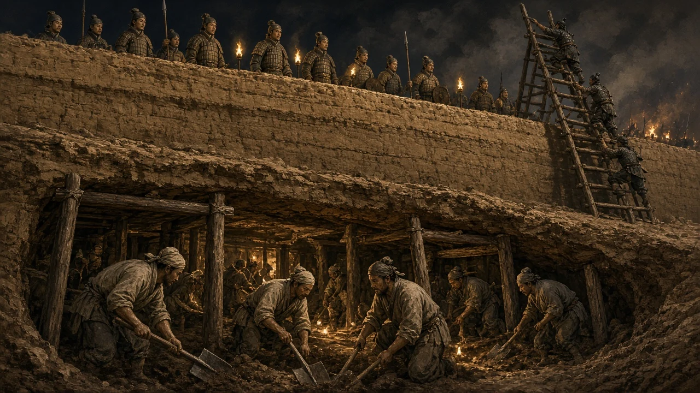
Night siege cutaway: diggers tunnel under rammed-earth wall; ladder and defenders above. AI-generated interpretation, not a historical record.
Sieges. Walled cities meant long sieges and portable scaling ladders.
Tunnels. Attackers dug under walls; defenders pumped smoke in with bellows.
Long walls. States linked forts and watch stations with long defensive walls.
Control. Garrisons and barriers checked travelers and taxed merchants.
Sources: Ebrey, Ch. 2, p. 24.
This slide shows war turning into engineering. Because cities were walled, attacks on them became prolonged sieges , and generals kept looking for new ways to attack and defend walls. Attackers brought portable ladders to scale them. When attackers dug tunnels under the walls, defenders used large bellows, the kind used in smelting iron, to pump smoke into the tunnels and suffocate them (p. 24).
City walls were not the only defense. States built chains of watch stations and forts, often joined by long defensive walls. Permanent garrisons guarded strategic points to block armies. Those barriers also let states check who came and went and collect transit taxes from merchants (p. 24). Notice that a wall built for war also became a tool for taxing trade.
Night siege cutaway: diggers tunnel under rammed-earth wall; ladder and defenders above. AI-generated interpretation, not a historical record.
Why this matters: for Reading Guide Q2, sieges and walls show war becoming longer, more technical and more expensive, and connected to the iron industry.
Check yourself: How did defenders fight attackers who tunneled under a wall?
Q2 story · Primary source · Zhao · 307 BCE
In 307 BCE a Northern King Put His Army in Nomad Trousers
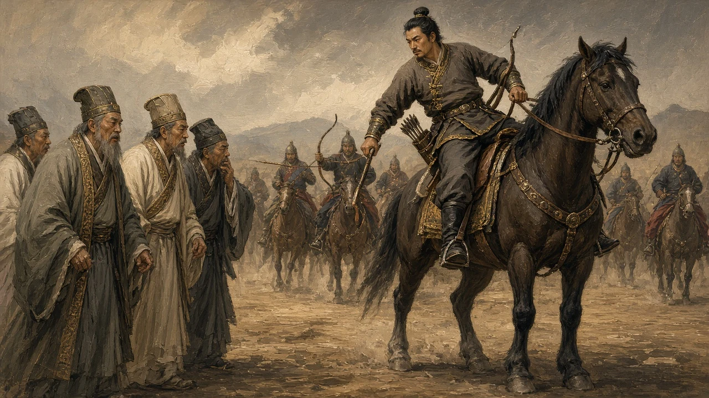
Anonymous northern ruler rides in short jacket, trousers and boots; robed courtiers recoil. AI-generated interpretation, not a historical record.
307 BCE. The king of the northern state of Jin ordered nomad trousers.
Why. Northern nomads had perfected shooting bows from horseback.
The uncle. Gongzi Cheng objected: the king would stop being part of the Middle Kingdoms.
The reply. “Clothes exist to be useful.” Soon Zhao used cavalry against Chinese states.
Sources: Ebrey, Ch. 2, pp. 24–25 (Documents: The King of Zhao Convinces His Uncle to Wear Barbarian Dress); Intrigues of the Warring States , trans. J. I. Crump.
This slide gives you a primary source. Cavalry struck another blow at the chariot aristocracy. Shooting arrows from horseback was first perfected by the non-Chinese peoples to the north, then becoming nomadic herders (p. 24). Your textbook says that in 307 BCE "the king of the northern state of Jin" ordered his troops to adopt the nomads' trousers and practice mounted archery (p. 24). Its next sentence and its Documents box both call the state Zhao , and Zhao is right: Jin had already split into Han, Wei and Zhao, and the king was King Wuling of Zhao. Remember him as the king of Zhao.
The Documents box, from a Warring States collection called the Intrigues of the Warring States , tells how he won over his uncle, Gongzi Cheng . The uncle protested that the Middle Kingdoms were the model for the barbarians; wearing their clothes meant ceasing to be part of the Middle Kingdoms. The king answered, "Clothes exist to be useful and manners respond to conditions," and the uncle gave in (p. 25).
The print is from 1785, about two thousand years later.
Why this matters: for Reading Guide Q2, survival beat tradition: rivals had to master cavalry too (p. 24).
Check yourself: What did the uncle think clothes meant, and how did the king answer?
Anonymous northern ruler rides in short jacket, trousers and boots; robed courtiers recoil. AI-generated interpretation, not a historical record.
Q2 story · Changping · 260 BCE
At Changping in 260 BCE Qin Called Up Every Man over Fifteen
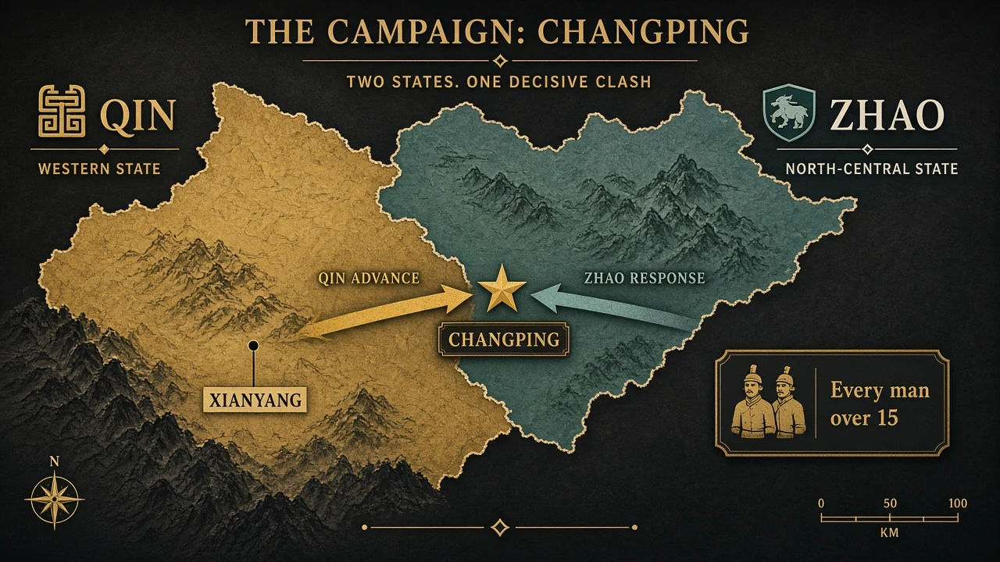
Qin and Zhao converge on Changping; Qin mobilizes every man over fifteen. AI-generated explanatory schematic; geography and routes simplified, not to scale.
Everyone. Qin’s campaign against Zhao mobilized all men over fifteen.
Three years. The campaign dragged on for three years, not one season.
A huge front. Hundreds of thousands per side, deadlocked over a hundred miles.
Qin won. Qin defeated Zhao, the state that had pioneered cavalry.
← Compare: the duke at the river, 638 BCE
Sources: Ebrey, Ch. 2, pp. 23–24.
This slide brings Segment 2 to its climax. Compare it with the duke at the river. Spring and Autumn campaigns had lasted no longer than a season, and battles a day or two. Some Warring States campaigns lasted years, with separate armies fighting on several fronts at once (p. 24).
The greatest was Qin's war against Zhao . Qin's campaign of 260 BCE mobilized all men over age fifteen (p. 23). Qin's victory came after a campaign that lasted three years and involved hundreds of thousands of soldiers on each side, deadlocked across a front more than a hundred miles long (p. 24). Later histories, beyond your textbook, say Qin then killed the surrendered Zhao army, and the battle is remembered as Changping, after the place in Shanxi where it was fought.
Qin and Zhao converge on Changping; Qin mobilizes every man over fifteen. AI-generated explanatory schematic; geography and routes simplified, not to scale.
Why this matters: Reading Guide Q2 asks how war's scale and its impact on society changed. Changping is your sharpest piece of evidence: a whole society at war.
Check yourself: List three ways the war of 260 BCE differed from the battle of 638 BCE. Which change mattered most to ordinary families?
Self-check · Segment 2 · not graded
Check Yourself: War Without Rules
Answer each question from memory, out loud or on paper, then click Show answer . Nothing here is graded or recorded.
1. How big was a large Spring and Autumn army, and what was at its center?
Show answer
Up to ten thousand soldiers, with the chariot at the center (pp. 22–23).
2. Why could conscript infantry beat trained aristocrats?
Show answer
Standardization, organization, discipline and sheer size, helped by the crossbow (p. 23).
3. What did Wei’s elite troops win for their households?
Show answer
Exemption from all taxes and labor service (p. 24).
4. Whom did Qin mobilize for its campaign against Zhao in 260 BCE?
Show answer
All men over age fifteen (p. 23).
Missed one? Go back: chivalry-code infantry-crossbow wei-elite changping-260
Segment 2 is done. Test yourself before Review Question 2. These four questions come from the Check yourself prompts on the segment's slides (pp. 22–24).
Answer each one from memory before you click Show answer . If you miss one, the links at the bottom take you back to the slide that teaches it.
Notice that the questions trace a before-and-after: the size and weapons of a Spring and Autumn army, the reasons infantry won, how states rewarded skilled soldiers, and the scale of 260 BCE. Review Question 2 asks you to turn exactly that before-and-after into an argument.
Why this matters: retrieval practice now makes the written answer much easier.
Check yourself: Which of the four changes, technology, tactics, organization or scale, can you explain best, and which needs another look?
Your turn · Reading Guide · Review Question 2
Reading Guide · Review Question 2
Review Question 2
Analyze the transformation of warfare from the Spring and Autumn period to the Warring States period. How did technological, tactical, and organizational innovations alter the scale and societal impact of conflict?
Open the Reading Guide ↗
Sort your evidence into three bins (technology, tactics, organization), then show how each changed the scale of war and its effect on ordinary people.
Go back to the teaching slides: B · hook-song-river P · chivalry-code Q · concept-total-war R · infantry-crossbow S · wei-elite T · sieges-walls U · zhao-trousers V · changping-260
Reading Guide Q2 (p. 23). Try it on your own first; the button opens the guide in a new tab.
How to build a strong answer: begin with a clear "before" and "after." The duke at the river and code of honor slides give you the before; the Changping slide gives you the after.
Then fill three bins. Technology: the crossbow, armor and iron helmets, and cavalry (the infantry and crossbow and trousers slides). Tactics: generals of maneuver and deception, sieges and tunnels (the Wei elite and sieges slides). Organization: conscription, drill, elite corps, garrisons and walls (the conscription slide and the same slides).
The second sentence of the question asks about effects. For scale , use numbers: ten thousand men, a couple hundred thousand, every man over fifteen, three years, a hundred-mile front. For societal impact , ask who now fought and what the state now needed from families. Finish with a judgment: which innovation mattered most?
Why this matters: this question links straight to Q3: war is why rulers wanted more farmers, taxes and iron.
Check yourself: Can you name one example in each of the three bins without looking back?
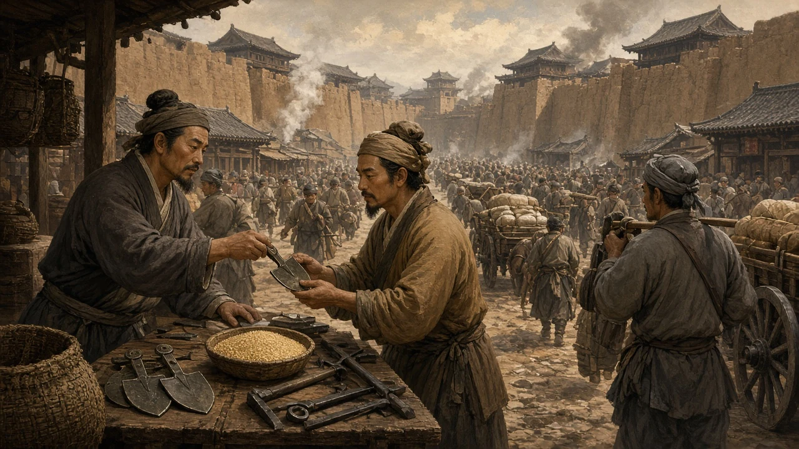
Segment 3 of 4 · Act III · 6th–3rd centuries BCE
Iron, Coins and Counted People
Mass armies had to be fed, armed and paid for. The states remade their economies.
Busy living Warring States market with tools, trade, carts, rammed-earth walls. AI-generated interpretation, not a historical record.
Segment 3 begins. Mass armies made ordinary farmers and craftsmen crucial, so rulers set out to increase their populations and their harvests (p. 24). This segment follows the farms, iron, cities, coins and officials that resulted, and what happened to the serfs.
Busy living Warring States market with tools, trade, carts, rammed-earth walls. AI-generated interpretation, not a historical record.
It builds toward Reading Guide Q3, on economic and demographic change and the decline of serfdom.
Check yourself: Guess: why would a ruler at war want to deal with farmers directly rather than through their lords?
Q3 concept · Serf · Taxpayer
Concept: A Serf Worked for a Lord; a Taxpayer Owed the State Directly
Concept
Serf → taxpayer
A serf is a farmer bound to a lord’s land who owes the lord labor and goods. A taxpayer owes taxes and service directly to the ruler’s state.
Before. Zhou lords held lands and the serfs who farmed them.
The problem. A ruler at war needed farmers’ labor without lords in the way.
The fix. Survey the land and tax the farmers directly.
Sources: Ebrey, Ch. 2, p. 24.
You need one pair of words before the next story. A serf is a farmer bound to a lord's land, who owes that lord labor and a share of the harvest and cannot simply leave. In Chapter 1 you met the Zhou lords and the farmers who served them; the recap links reopen those slides. A taxpayer , in this lecture, is a farmer who owes taxes and service directly to the ruler's state instead of to a local lord.
Your textbook explains why rulers wanted the change. By the sixth century BCE some rulers were surveying their land and starting to levy taxes on farmers. "They wanted to undermine the power of lords over their serfs in order to get direct access to peasants' labor power" (p. 24). That sentence is the anchor for Reading Guide Q3. Notice the logic: a lord standing between ruler and farmer took a share of everything, labor, grain and soldiers.
There is no image: a concept slide gives you a tool, and the next slides use it.
Why this matters: Reading Guide Q3 ends by asking how serfdom declined. This shift, from serf to taxpayer, is what declined and what replaced it.
Check yourself: Who stood between a ruler and a serf, and why did a ruler at war want that person removed?
Q3 story · New fields · 6th–3rd centuries BCE
Rulers Drained Marshes, Surveyed Fields and Registered Every Family
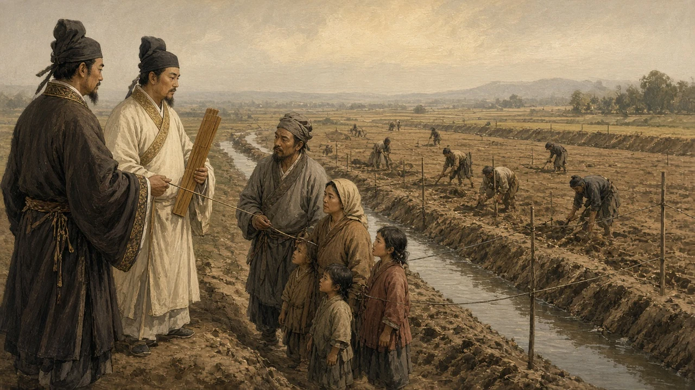
Officials with cords survey drained fields and register a family beside a canal. AI-generated interpretation, not a historical record.
More land. Rulers opened new fields, drained marshes and dug irrigation channels.
Surveys. By the 6th century BCE, some rulers surveyed land to tax farmers.
Serfdom fades. Taxing farmers directly undercut the lords, and serfdom gradually declined.
Family names. Registering people gave commoners family names, earlier than anywhere else.
Sources: Ebrey, Ch. 2, p. 24.
This slide shows the first set of changes. Because the new warfare made commoners crucial, rulers tried to increase their populations and harvests. They brought new land into cultivation, drained marshes and dug irrigation channels (p. 24).
Then they counted. By the sixth century BCE some rulers were surveying their land and beginning to levy taxes on farmers, to get direct access to peasants' labor and weaken the lords. "Serfdom thus gradually declined" (p. 24). Registering populations had a surprising side effect: commoners received family names earlier than anywhere else in the world (p. 24). Think of it from the state's side: to tax and draft a man, an official had to write down who he was.
Officials with cords survey drained fields and register a family beside a canal. AI-generated interpretation, not a historical record.
Why this matters: Reading Guide Q3 asks about agriculture and administration. This slide gives you both, and links them to the decline of serfdom.
Check yourself: Why did registering families lead to family names for commoners? How did surveys and taxes weaken serfdom?
Q3 story · Iron · 5th–3rd centuries BCE
Chinese Smiths Cast Iron Tools, and Iron Spread to Every Farm and Army
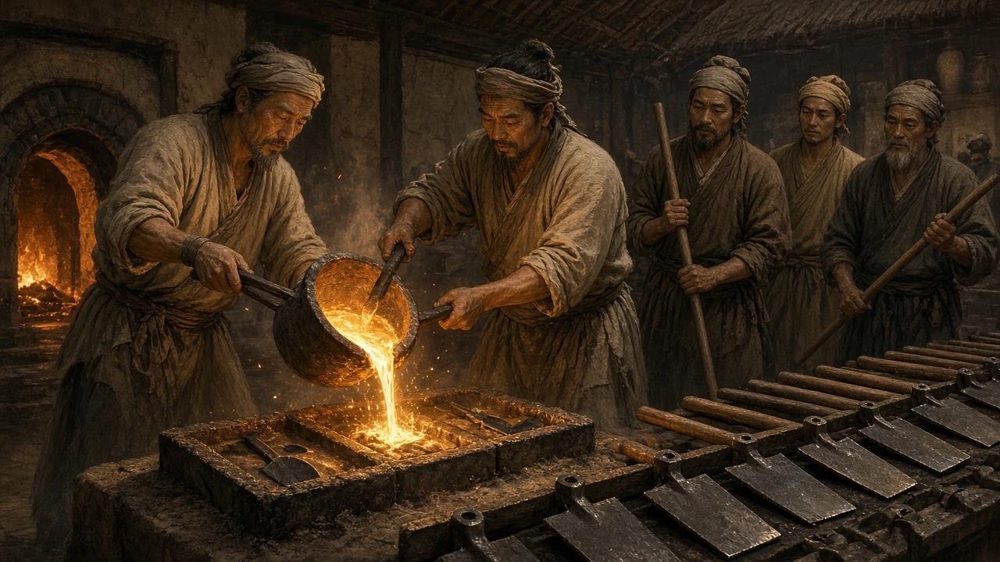
Smiths pour molten iron into tool molds; farmers wait holding wooden handles. AI-generated interpretation, not a historical record.
Cast. Chinese iron was cast in molds from the start, unlike in the West.
5th century BCE. Iron was widely used for farm tools and weapons.
3rd century BCE. The largest smelters employed two hundred or more workmen.
The effect. Cheaper, stronger tools helped open new land and feed armies.
Sources: Ebrey, Ch. 2, p. 24.
This slide adds the metal that changed farming and war. The development of iron technology also promoted economic growth. Your textbook says Chinese iron was cast from the beginning, poured molten into molds, "unlike in the West, where iron was wrought," that is, hammered into shape, long before it was cast (p. 24). By the fifth century BCE iron was widely used for farm tools and weapons, and by the third century the largest smelters employed two hundred or more workmen (p. 24).
Why does casting matter? Molds let workshops turn out many identical tools, hoes, plow tips and sickles, quickly and cheaply. Cheap iron tools helped farmers clear new land and dig the irrigation channels on the previous slide. One small correction: archaeologists have since found some early Chinese iron that was hammered rather than cast, but casting quickly became the Chinese way, far earlier than in Europe.
Smiths pour molten iron into tool molds; farmers wait holding wooden handles. AI-generated interpretation, not a historical record.
Why this matters: Reading Guide Q3 asks about metallurgy. Iron connects to farming (more land), to war (weapons) and to the new smelting businesses.
Check yourself: What is the difference between cast and wrought iron, and why did casting help farmers?
Q3 story · Cities and coins · 5th–3rd centuries BCE
New Cities, New Rich and Coins Shaped Like Spades
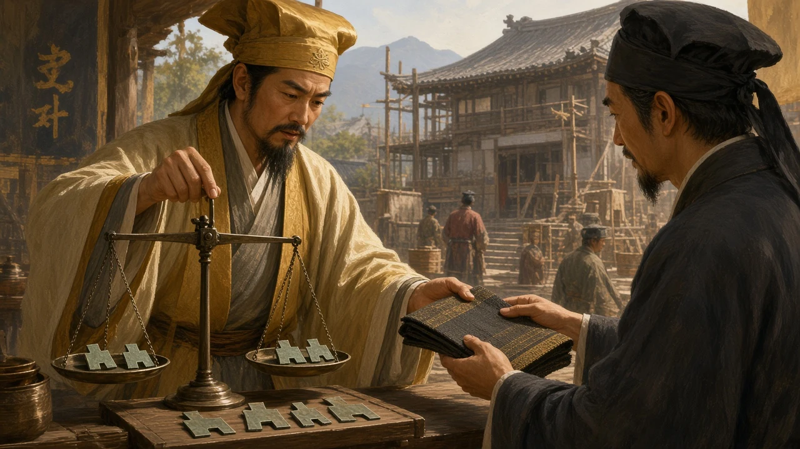
A merchant weighs small spade-shaped bronze coins; a new mansion rises behind the market. AI-generated interpretation, not a historical record.
Cities. Cities appeared all over north China, with new outer walls.
Who lived there. Artisans, merchants and farmers settled around the palaces.
New rich. Some grew rich from trade or industry, not inheritance.
Coins. Rulers cast coins to promote trade, at first shaped like spades.
Sources: Ebrey, Ch. 2, p. 24.
This slide shows the economic growth of the late Zhou in its cities. Cities appeared all over north China. Thick earthen walls already surrounded the palaces and ancestral temples of rulers and aristocrats; now outer walls were added to protect the artisans, merchants and farmers living around them (p. 24). That is a sign that ordinary city people now mattered to the state.
A new powerful group emerged: rich people who had gained their wealth through trade or industry rather than inheritance or political favor (p. 24). Late Zhou texts mention trade across regions in furs, copper, dyes, hemp, salt and horses. To promote trade, rulers began casting coins , at first in the shape of miniature spades (p. 24). The model of Linzi on the Segment 3 divider shows what such a city looked like.
A merchant weighs small spade-shaped bronze coins; a new mansion rises behind the market. AI-generated interpretation, not a historical record.
Why this matters: Reading Guide Q3 asks about economic transformation. Wealth from trade, not birth, is another sign of the theme of this lecture.
Check yourself: Name two signs of economic growth in late Zhou cities.
Q3 story · Kings and officials · 4th century BCE
Rulers Called Themselves Kings and Governed Through Officials They Could Fire
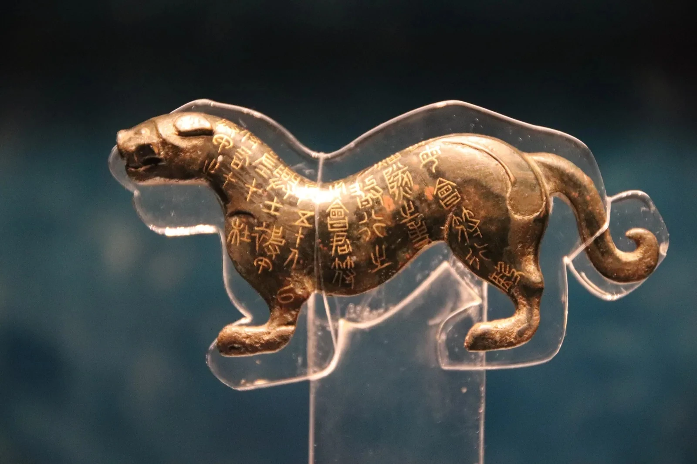
Qin bronze tiger tally, Shaanxi History Museum. Photo: Gary Todd, CC0 1.0, Wikimedia Commons . Authentic outer half; matching faces are not shown.
Kings. In the 4th century BCE, rulers began calling themselves kings.
The meaning. The title announced an intent to conquer all the other states.
Officials. Rulers sent their own officials instead of relying on hereditary lords.
Control. Officials were managed through documents and could be dismissed.
Sources: Ebrey, Ch. 2, pp. 24–26.
This slide shows how the rulers' power changed. In the fourth century BCE, rulers of states started calling themselves kings , a title once reserved for the Zhou king. Your textbook says this step amounted to announcing their intent to conquer all the other states (p. 24).
To control larger states, rulers dispatched their own officials rather than delegating authority to hereditary lesser lords. They managed these officials from a distance through written documents and could dismiss them if they proved unsatisfactory (pp. 24–26). That is the key difference from a hereditary lord: an official held his job only while the ruler was satisfied.
The photograph shows an actual Qin bronze tiger tally. The ruler and officer held matching halves to authenticate orders. This view shows an outer half, not the inner mating faces; it does not demonstrate the join. Photo: Gary Todd, CC0 1.0.
Why this matters: Reading Guide Q3 asks about administration, and this is where the shi's opportunities in Reading Guide Q4 begin.
Check yourself: How was a dismissible official different from a hereditary lord? Why would a ruler at war prefer the official?
Self-check · Segment 3 · not graded
Check Yourself: Iron, Coins and Counted People
Answer each question from memory, out loud or on paper, then click Show answer . Nothing here is graded or recorded.
1. Why did rulers survey land and tax farmers directly?
Show answer
To undermine the lords’ power over serfs and get direct access to peasants’ labor (p. 24).
2. What surprising result came from registering populations?
Show answer
Commoners got family names earlier than anywhere else in the world (p. 24).
3. By when was iron widely used for farm tools and weapons?
Show answer
By the fifth century BCE (p. 24).
4. What did it mean when rulers began calling themselves kings?
Show answer
They announced an intent to conquer all the other states (p. 24).
Missed one? Go back: concept-serf-taxpayer fields-and-registers cast-iron kings-officials
Segment 3 is done. Test yourself before Review Question 3. These four questions come from the Check yourself prompts on the segment's slides (p. 24).
Answer each from memory before you click Show answer . If you miss one, use the links to go back and reread that slide's notes.
Notice how the questions link together: surveys and taxes cut out the lords; registers produced family names; iron spread to farms and armies; and kings governed through officials. Review Question 3 asks you to connect those developments to the decline of serfdom.
Why this matters: you will write a better answer if you can recall the facts before you start arguing with them.
Check yourself: Can you draw a simple arrow chain from war, to taxes, to the end of serfdom?
Your turn · Reading Guide · Review Question 3
Reading Guide · Review Question 3
Review Question 3
Discuss the major economic and demographic transformations that occurred during the Eastern Zhou period. How did developments in agriculture, administration, and metallurgy contribute to the decline of serfdom?
Open the Reading Guide ↗
Start with the changes (farms, people, iron, cities, coins), then explain the mechanism that weakened the lords’ hold on serfs.
Go back to the teaching slides: Z · concept-serf-taxpayer AA · fields-and-registers AB · cast-iron AC · cities-coins AD · kings-officials S · wei-elite
Reading Guide Q3 (p. 24). Try it on your own first; the button opens the guide in a new tab.
How to build a strong answer: the first sentence of the question asks you to describe changes. Economic: new fields and irrigation, iron tools and big smelters, cities with outer walls, new rich from trade, and coins (the fields , iron and cities and coins slides). Demographic: rulers worked to increase their populations and registered them, which gave commoners family names.
The second sentence asks for a mechanism . Use the serf and taxpayer concept and the anchor sentence on page 24: rulers wanted direct access to peasants' labor. Then show how each development fed that goal. Agriculture: more land and irrigation. Administration: surveys, taxes, registers, dismissible officials (the kings and officials slide). Metallurgy: cheap iron tools. The Wei tax exemption on the Wei elite slide shows a state dealing with households directly.
Finish with a judgment: which of the three mattered most, and was serfdom's decline sudden or gradual?
Why this matters: Chapter 3 shows how Qin pushed these changes furthest.
Check yourself: Can you explain the decline of serfdom in one "because" sentence?
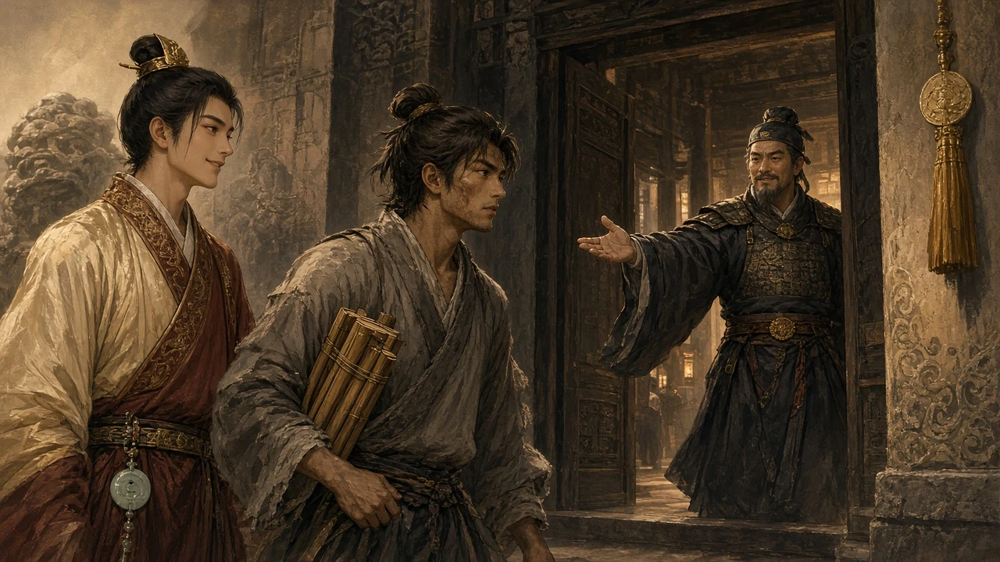
Segment 4 of 4 · Act IV · 6th–3rd centuries BCE
Two Applicants
Every state destroyed sent its nobles down into the shi. Rulers needed what they knew.
Rich noble and plain shi are both invited through a palace gate. AI-generated interpretation, not a historical record.
Segment 4 begins. Wars destroyed states, and kings needed officials. This segment follows the people who filled those jobs, the shi (shih), and why their rise mattered so much (p. 26).
Rich noble and plain shi are both invited through a palace gate. AI-generated interpretation, not a historical record.
This segment builds toward Reading Guide Q4.
Check yourself: Guess: what could a noble keep after his state was destroyed and his land was gone?
Q4 concept · Shi · Merit
Concept: The Shi Were the Lowest Aristocrats, and Merit Became Their Ticket Up
Concept
Shi · Merit
The shi were the lower ranks of the old aristocracy. Merit means choosing people for their ability and character rather than their birth.
Who. The lowest rung of the Zhou nobility, below the great lords.
Values. Many lacked military skills but kept honor and loyal service.
Merit. Guan Zhong already hired officials for character and ability, not birth.
Sources: Ebrey, Ch. 2, pp. 20, 22 and 26.
You need two words for this segment. The shi (pronounced "shih") were the lower ranks of the old aristocratic order (p. 20). In Chapter 1 you saw them near the bottom of the Zhou ladder of rank, below the great lords and hereditary officials; the recap link reopens that slide. Your textbook calls them lower-level aristocrats, and says that although many no longer had military skills, they kept knightly values such as a sense of honor and an ideal of loyal service (p. 26).
Merit means choosing people for what they can do and what kind of people they are, rather than for who their parents were. You already met it: Guan Zhong encouraged hiring officials on the basis of their moral character and ability rather than their birth (p. 22).
Put the two together and you have this segment's story: as birth mattered less, men of low noble rank could rise by merit.
Why this matters: Reading Guide Q4 asks about the emergence and significance of the shi; you cannot answer it without both terms.
Check yourself: Who were the shi, and what values did they keep?
Q4 story · At a ruler’s gate · Warring States
A Noble’s Son and a Clever Shi Applied for the Same Post
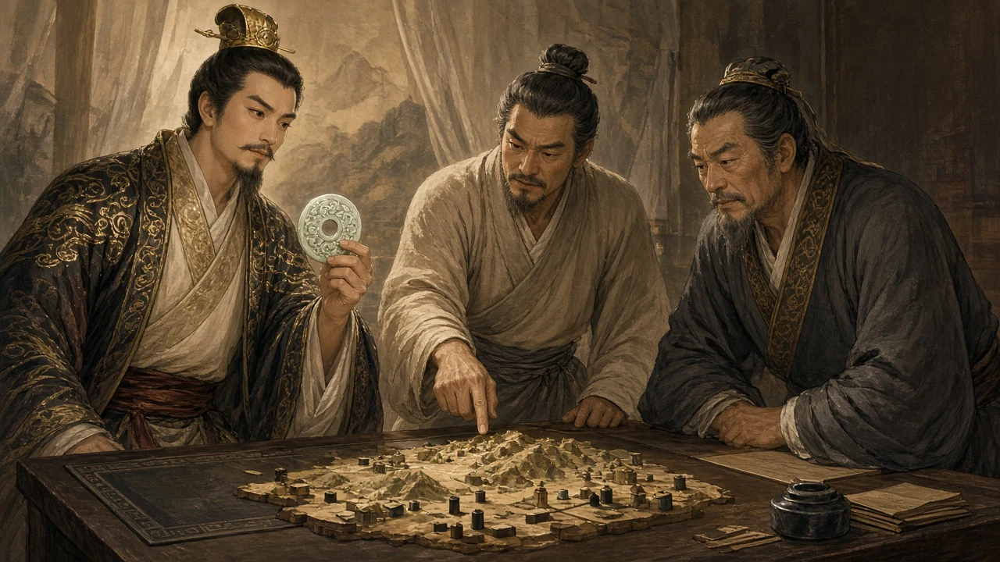
Noble shows jade pedigree token; shi demonstrates practical solution to magistrate. AI-generated interpretation, not a historical record.
Applicant one. An old family, an impressive title, but he had never governed anything.
Applicant two. A shi whose family lost its land; he could write, count and plan.
The ruler’s need. Soldiers, grain, taxes, records and officials he could dismiss.
The choice. Birth still counted, but it was no longer enough.
Sources: Ebrey, Ch. 2, pp. 24–26; Shuihudi statutes (see the background essay).
This slide asks you to stand in a ruler's shoes. Imagine two men at your gate. The first comes from an ancient family, knows the proper ceremonies and holds an impressive title, but has never governed anything. The second is a shi whose family lost its land, perhaps in a war that destroyed his state. He can read and write, keep records, and talk about strategy, taxes and alliances. You are fighting for survival. Whom do you hire?
The scene is an illustration, not a recorded event, but the pressures behind it come from your textbook. Rulers now governed through their own officials, controlled them through documents and dismissed them when they failed. For the shi, "serving a ruler in this way offered new opportunities for advancement" (p. 26).
Noble shows jade pedigree token; shi demonstrates practical solution to magistrate. AI-generated interpretation, not a historical record.
Why this matters: Reading Guide Q4 asks how the changing political landscape created opportunities. This choice is the opportunity.
Check yourself: List two skills the second applicant offered that the first did not. Why did war make those skills valuable?
Q4 story · Conquered states · 7th–3rd centuries BCE
Every Conquered State Added Nobles to the Ranks of the Shi
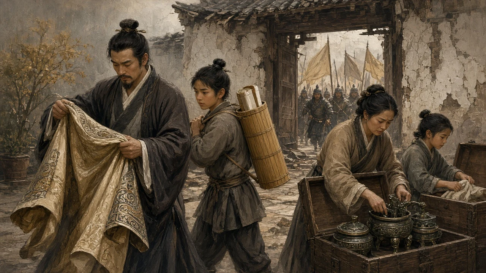
Noble family packs ancestral bronzes as victorious soldiers enter courtyard. AI-generated interpretation, not a historical record.
Conquest. Every time a state was destroyed, its old nobility sank to shi status.
Supply. So there were plenty of shi eager for posts.
Portable skills. Land stayed behind; literacy, ritual and strategy could travel.
Demand. Rulers dispatched officials instead of hereditary lords.
Sources: Ebrey, Ch. 2, pp. 20 and 24–26.
This slide explains where all the shi came from. Your textbook gives a striking reason: "every time a state was destroyed, its old nobility sunk in status to shi" (p. 26). Remember how many states there had been, and that by the third century only seven important ones remained (p. 20). Each conquest pushed another layer of noble families down the ladder.
Think about what such a family lost and kept. It lost its land, its estates and its inherited office. It did not lose its education: reading and writing, ritual, diplomacy, military strategy. Land cannot travel, but knowledge can. That created a supply of skilled men looking for work, just as rulers created demand by sending out their own officials instead of relying on hereditary lords (p. 24).
Noble family packs ancestral bronzes as victorious soldiers enter courtyard. AI-generated interpretation, not a historical record.
Why this matters: for Reading Guide Q4, this is the emergence half: the shi grew because the multistate wars kept producing them.
Check yourself: Explain the supply and the demand that together produced so many ambitious shi.
Q4 story · Rulers’ courts · 5th–3rd centuries BCE
Rulers Competed for Thinkers, and a Hundred Schools of Thought Bloomed
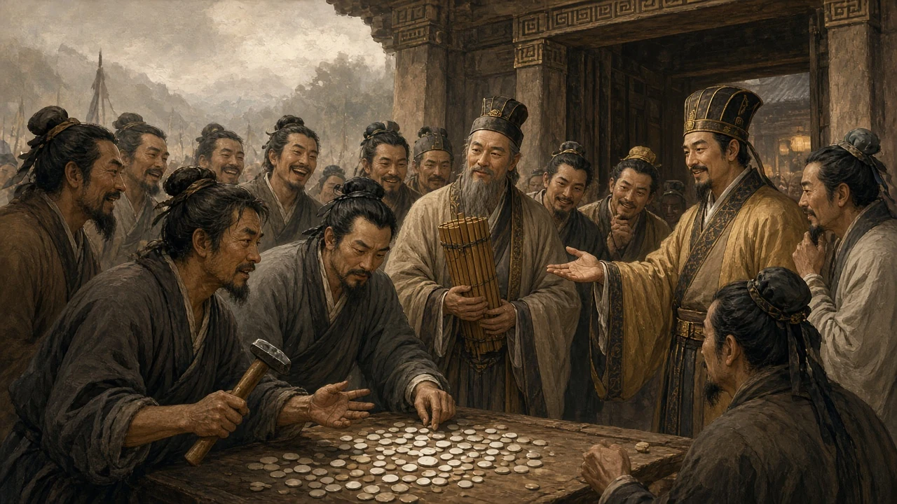
Craftsman, ritual scholar and strategist debate before an inviting royal envoy. AI-generated interpretation, not a historical record.
The demand. Rulers wanted solutions to disorder and the prestige of wise men.
Persuaders. Strategists traveled from state to state urging alliances and policies.
Debate. Proposals met challengers, and teachers gathered followers.
Later labels. “Confucian,” “Daoist” and “Legalist” were names given later.
Sources: Ebrey, Ch. 2, pp. 20 and 26.
This slide shows the biggest result of the rise of the shi. The late Zhou was a period when all sorts of ideas were proposed, debated, written down and put to use, so Chinese later called it the time when "a hundred schools of thought bloomed" (p. 26). Rivalry and constant war helped rather than hindered creativity: rulers turned to men of ideas both for solutions to the disorder around them and for the prestige of attracting wise and able men to their courts (p. 26).
Political strategists traveled from state to state urging rulers to form alliances. Lively debates followed, as some proposed policies and others challenged them. Successful teachers attracted followers, who recorded their ideas on silk and on strips of wood or bamboo tied together (p. 26). The labels you will meet, Confucianism, Daoism, Legalism, were applied by later historians, beginning with Sima Qian about 100 BCE (p. 26).
Craftsman, ritual scholar and strategist debate before an inviting royal envoy. AI-generated interpretation, not a historical record.
Why this matters: for Reading Guide Q4, this is the significance of the shi: as they competed to advise rulers, they set off China's great age of thought (p. 20). The next three lectures meet the thinkers themselves.
Check yourself: Why did war and division help, rather than hurt, new ideas?
Self-check · Segment 4 · not graded
Check Yourself: Two Applicants
Answer each question from memory, out loud or on paper, then click Show answer . Nothing here is graded or recorded.
1. Who were the shi?
Show answer
The lower ranks of the old aristocratic order, lower-level aristocrats (pp. 20 and 26).
2. What happened to a destroyed state’s old nobility?
Show answer
It sank in status to shi (p. 26).
3. How did rulers control their new officials?
Show answer
Through documents sent from a distance, and by dismissing those who failed (pp. 24–26).
4. Why did rulers welcome men of ideas to their courts?
Show answer
For solutions to the disorder around them and for prestige (p. 26).
Missed one? Go back: concept-merit falling-nobles kings-officials hundred-schools
Segment 4 is done. Test yourself before Review Question 4. These four questions come from the Check yourself prompts on the segment's slides (p. 26).
Answer each from memory before you click Show answer . If you miss one, the links take you back to the slide that teaches it.
Notice that the questions follow the Reading Guide question's own parts: who the shi were, how there came to be so many, what the new kind of state offered them, and what their competition produced. You will need all four.
Why this matters: Review Question 4 asks you to explain both how the shi emerged and why they mattered; recalling the facts first frees you to think about the argument.
Check yourself: Which of the four would you use as the opening sentence of your answer, and why?
Your turn · Reading Guide · Review Question 4
Reading Guide · Review Question 4
Review Question 4
Explain the emergence and significance of the shi class during the Eastern Zhou period. How did the changing political landscape create opportunities for these individuals to influence statecraft?
Open the Reading Guide ↗
Three parts: where the shi came from, why they mattered, and which political changes opened doors for them. Name a person as an example.
Go back to the teaching slides: AH · concept-merit AI · two-applicants AJ · falling-nobles AK · hundred-schools AD · kings-officials H · guan-zhong
Reading Guide Q4 (p. 26). Try it on your own first; the button opens the guide in a new tab.
How to build a strong answer: for emergence , define the shi with the shi and merit concept slide, then explain why their numbers grew with the conquered states slide and the anchor sentence on page 26 beginning "For the shi...".
For opportunities in statecraft , connect the shi to the changes you studied in Segments 1 to 3: rulers who called themselves kings and sent out dismissible officials (the kings and officials slide), states competing to survive, and the ruler's choice on the two applicants slide. The Guan Zhong story gives you an early, named example of an adviser chosen for ability.
For significance , use the hundred schools slide: the shi's competition to advise rulers set off China's great age of thought. End with your own judgment: was the rise of the shi a cause of the changes in this lecture, or a result of them, or both?
Why this matters: the next three lectures follow shi such as Confucius and Mencius.
Check yourself: Can you name one cause of the shi's rise and one consequence?
Closing · From the river to Changping · 638–260 BCE
The Duke Who Waited at the River Would Not Have Recognized the World of 260 BCE
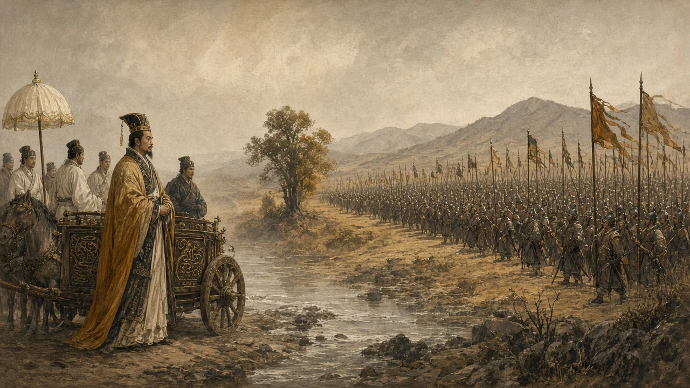
River-waiting chariot aristocrat blends into massed infantry across same landscape. AI-generated interpretation, not a historical record.
Then. Chariot nobles, a code of honor, armies of ten thousand.
Now. Drafted farmers, crossbows, cavalry, and every man over fifteen.
Who rose. Taxpayers, new rich, kings, officials, and shi with skills.
Next lecture. The most famous shi of all: Confucius and his challengers.
Go to Chapter 2, Lecture 2 →
← Back to the cold open
Sources: Ebrey, Ch. 2, pp. 20–26 and 34–35.
This slide closes the loop. Go back in your mind to 638 BCE and the duke of Song, who refused to attack an enemy crossing a river because a gentleman does not inflict a second wound. By 260 BCE, Qin was drafting every man over fifteen into a three-year war (pp. 23–24). In between, the rules of war, the economy and the meaning of noble birth all changed.
Your textbook's summary puts it in one sentence: society changed from one where membership in the elite depended almost entirely on birth to one with considerable opportunity for talented shi; city-states became territorial states drawing on their whole populations; and conscription became nearly universal (p. 35).
River-waiting chariot aristocrat blends into massed infantry across same landscape. AI-generated interpretation, not a historical record.
In the next lecture you meet the first and most important of those talented shi, Confucius, and the thinkers who argued with him (p. 26).
Why this matters: every philosopher in Lectures 2 to 4 was answering the crisis you just studied.
Check yourself: In one sentence, what would have surprised the duke of Song most about the world of 260 BCE?
Beyond the lecture
Pierian Spring
Independent Study
Today's lecture ends here. Continue on your own: the stories below finish this chapter's history, and each one deepens a review question you have already answered.
"A little learning is a dang'rous thing;Alexander Pope, An Essay on Criticism , 1711
Welcome to the Pierian Spring. In Greek myth its water brought knowledge; Pope warned that a little learning breeds false confidence.
The three slides after this one are required independent study, for you to read on your own: rulers buried with their followers and the Qin ban of 383 BCE (pp. 22–23), Sunzi's Art of War (p. 32), and the three books that tell us what we know about this period (p. 21). Each links back to the lecture slide it deepens.
Check yourself: Which lecture slide left you with the biggest question? Start there.
Independent study · Q1 story · Qin · 621–383 BCE
Duke Mu of Qin Took 177 People into His Tomb; Qin Banned the Practice in 383 BCE
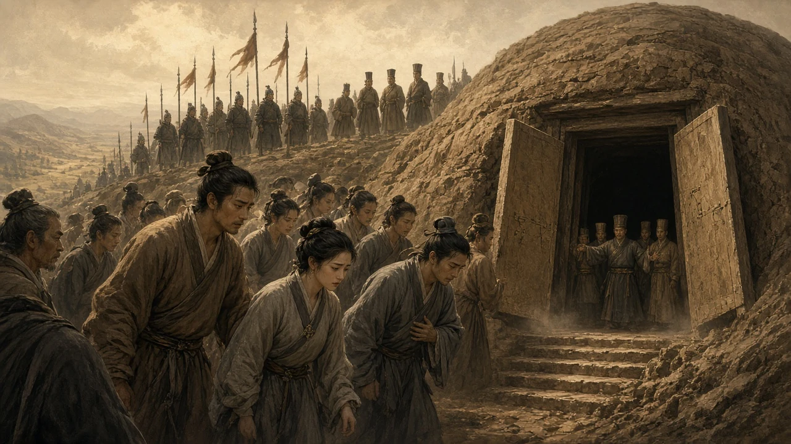
Anxious retainers approach royal tomb; intended secondary later scene bars entrance. AI-generated interpretation, not a historical record.
Sources: Ebrey, Ch. 2, p. 23.
This independent-study slide finishes a story you began in Chapter 1, where Shang kings were buried with many victims; the recap link reopens that slide. Rulers were still buried with followers in the Eastern Zhou. Duke Mu (moo) of Qin had 177 people accompany him in death in 621 BCE, and nearly a century later, in 537 BCE, your textbook says "Duke Jin" was buried with 166 people (p. 23). That name is probably a slip: the ruler who died in 537 was Duke Jing of Qin, whose huge tomb at Fengxiang was excavated in the 1970s and 1980s with about 166 people buried in coffins around him.
By this period some people disapproved. Qin outlawed the practice in 383 BCE. Sacrificing war captives in ceremonies unconnected with burials seems to have ended, though traces remained: captives' blood was used to consecrate new war drums, and captives were presented at the ancestral temple (p. 23).
Anxious retainers approach royal tomb; intended secondary later scene bars entrance. AI-generated interpretation, not a historical record.
Why this matters: for Reading Guide Q1, it shows the edge state of Qin still keeping old customs, then reforming them.
Check yourself: When did Qin outlaw burying followers, and what traces of captive sacrifice remained?
Independent study · Q2 story · Sunzi · probably 3rd century BCE
Sunzi Taught That the Best Victory Needs No Battle
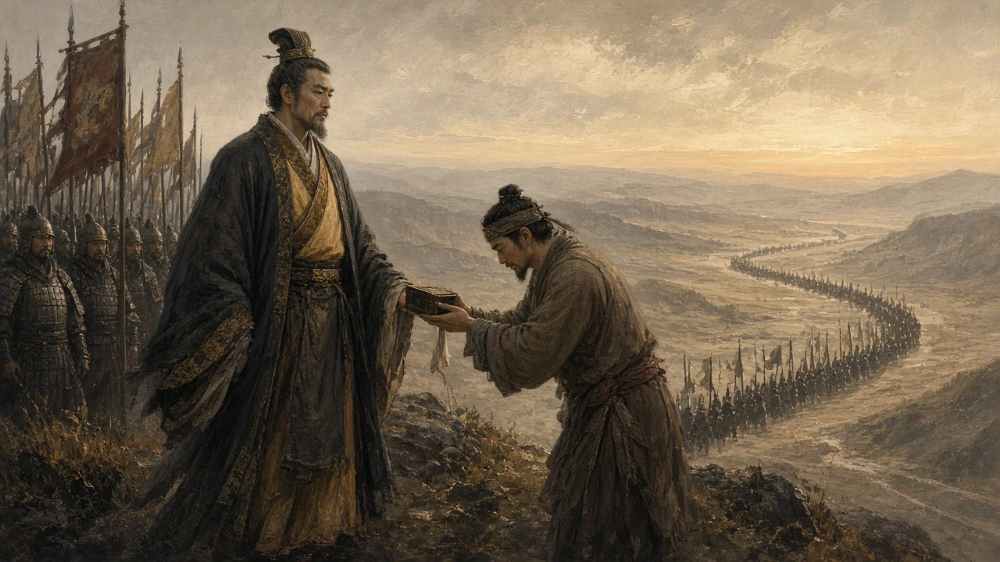
Strategist receives surrender token as enemy withdraws through unbloodied valley. AI-generated interpretation, not a historical record.
No bravado. War wastes lives and wealth, so win without spending them.
Best of all. Subdue the enemy’s army without a battle.
Discipline. The whole army must obey its commanders without question.
Deception. Spy on the enemy and do what he does not expect.
← Back to the lecture: Wei’s elite troops and the new generals
Sources: Ebrey, Ch. 2, p. 32.
This independent-study slide gives you the most famous book on war from this age. Sunzi's (sun-dze) Art of War probably dates to the third century BCE, so it belongs to the world of mass armies you studied in Segment 2, not to the duke of Song's (p. 32).
It warns against bravado. Because war costs lives and property, it is better to win without spending them: "One hundred victories in one hundred battles is not skillful; what is skillful is subjugating the opponent's army without battle" (Chapter 3 of the book). Great generals advance only when they know they can win; heroism is a useless virtue that leads to needless deaths. Discipline is essential, and the whole army must obey its commanders without question. Spying and doing what the enemy does not expect are skills worth learning (p. 32).
Sunzi compares an army to water, which avoids the high and flows to the low. You meet the same image in the Laozi in Lecture 3 (p. 32).
Strategist receives surrender token as enemy withdraws through unbloodied valley. AI-generated interpretation, not a historical record.
Why this matters: for Reading Guide Q2, Sunzi's ideal general is the opposite of the duke at the river.
Check yourself: Why did Sunzi call heroism a useless virtue?
Independent study · Q1 story · How we know
Three Old Books Tell Us Most of What We Know About the Eastern Zhou
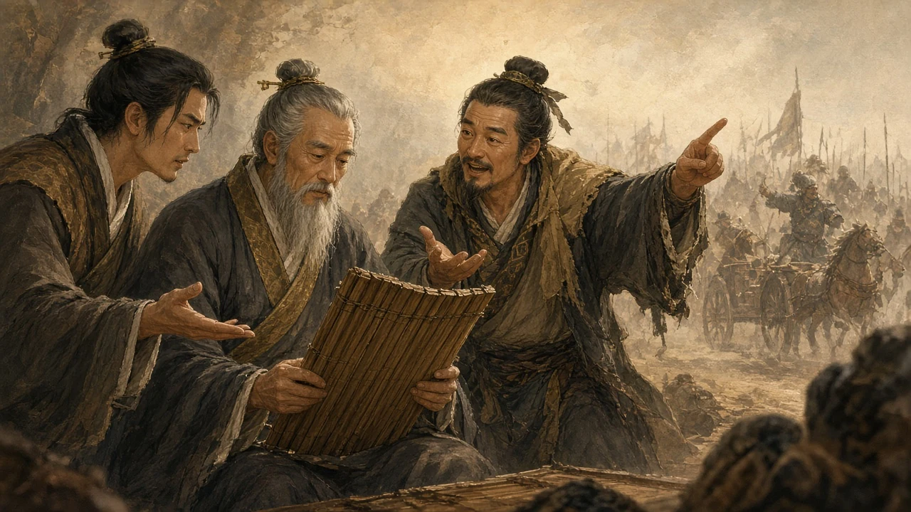
Chronicler, commentator and storyteller interpret one remembered chariot battle. AI-generated interpretation, not a historical record.
Zuo zhuan. A narrative of 722–463 BCE, attached to the brief Spring and Autumn Annals .
Intrigues. The Intrigues of the Warring States : stories arranged by state.
Discourses. Discourses of the States : speeches, covering both periods.
Caution. Authors and dates are uncertain, but they contain Zhou material.
← Back to the lecture: the duke at the river
Sources: Ebrey, Ch. 2, p. 21.
This independent-study slide answers a question you should always ask: how do we know? Your textbook says the Eastern Zhou is better documented than the Western Zhou because writers had learned the art of political narrative, telling events as connected stories (p. 21).
Three books matter most. For the Spring and Autumn period, the key chronicle is the Zuo zhuan , a narrative of the years 722 to 463 BCE, traditionally treated as a commentary on the much briefer Spring and Autumn Annals ; the duke at the river comes from it. For the Warring States, The Intrigues of the Warring States gives long stories arranged by state; the king of Zhao and his uncle come from it. A third work, the Discourses of the States , also arranged by state, concentrates on speeches and covers both periods (p. 21).
The authors and dates of all three are uncertain, but at a minimum they contain Zhou material (p. 21). So read the speeches in them as later retellings: good evidence of how people understood these events, less certain as word-for-word records.
Chronicler, commentator and storyteller interpret one remembered chariot battle. AI-generated interpretation, not a historical record.
Why this matters: for Reading Guide Q1, the very names of the two periods come from these books.
Check yourself: Which book tells the story of the duke of Song, and which tells the story of the king of Zhao?
Sources and image credits
The Stories in This Deck Rest on These Sources
Your textbook
Patricia Buckley Ebrey, A History of China , Chapter 2, “Philosophers and Warring States During the Eastern Zhou Period (770–256 BCE),” pp. 20–26 and 32–35, including Biography: Guan Zhong (p. 22) and Documents: The King of Zhao Convinces His Uncle to Wear Barbarian Dress (p. 25).
Beyond the textbook
Zuo zhuan (Duke Xi 22; Xi 23–24 for Chong’er of Jin), and Sima Qian, Shiji , for Duke Xiang of Song, the exile of Duke Wen of Jin, King Wuling of Zhao and Changping.Archaeology: the Houma covenant texts; the tomb of King Cuo of Zhongshan; Qin Gong No. 1 tomb (Duke Jing of Qin), Fengxiang; the Shuihudi Qin statutes; Qin tiger tallies; Dujiangyan.
Further reading
Mark Edward Lewis, Sanctioned Violence in Early China (SUNY Press, 1990); Yuri Pines, Envisioning Eternal Empire (2009); Cho-yun Hsu, Ancient China in Transition (Stanford, 1965); Donald B. Wagner, Iron and Steel in Ancient China (Brill, 1993). Full bibliography in the background essay.
Images
AI-generated cinematic interpretations and explanatory diagrams, approved by Steven on 2026-11-06; not primary-source evidence. The real Qin tiger-tally photograph is by Gary Todd (CC0 1.0), via Wikimedia Commons. Individual captions identify each image.
Textbook wording kept on the slides, with corrections in the notes: “Jin” for Zhao in 307 BCE (p. 24) and “Duke Jin” for Duke Jing of Qin (p. 23).
Background essay: the historians’ debates behind this lecture ↗
This slide gives you the sources behind the stories. Most of the facts in this deck come from your textbook, Chapter 2, pages 20 to 26 (pp. 20–26), with the Art of War from page 32 and the chapter summary from pages 34 and 35. A few details go beyond it, and the notes say so each time: the name of the duke of Song, Chong'er's exile, how covenant tablets were used, the tiger tally, Dujiangyan, and what happened after Changping.
Two corrections you should know about. On page 24 your textbook calls the king who ordered nomad trousers in 307 BCE the king of "Jin"; its own Documents box shows he was the king of Zhao. On page 23 it names "Duke Jin" as the ruler buried with 166 people in 537 BCE; that was almost certainly Duke Jing of Qin. The slides keep the textbook's wording so you can find it in the book, and the notes give the correction.
Why this matters: every claim in a history deck should be traceable to a source you could check yourself.
Check yourself: Pick one fact from this deck that comes from beyond the textbook. Where would you go to check it?